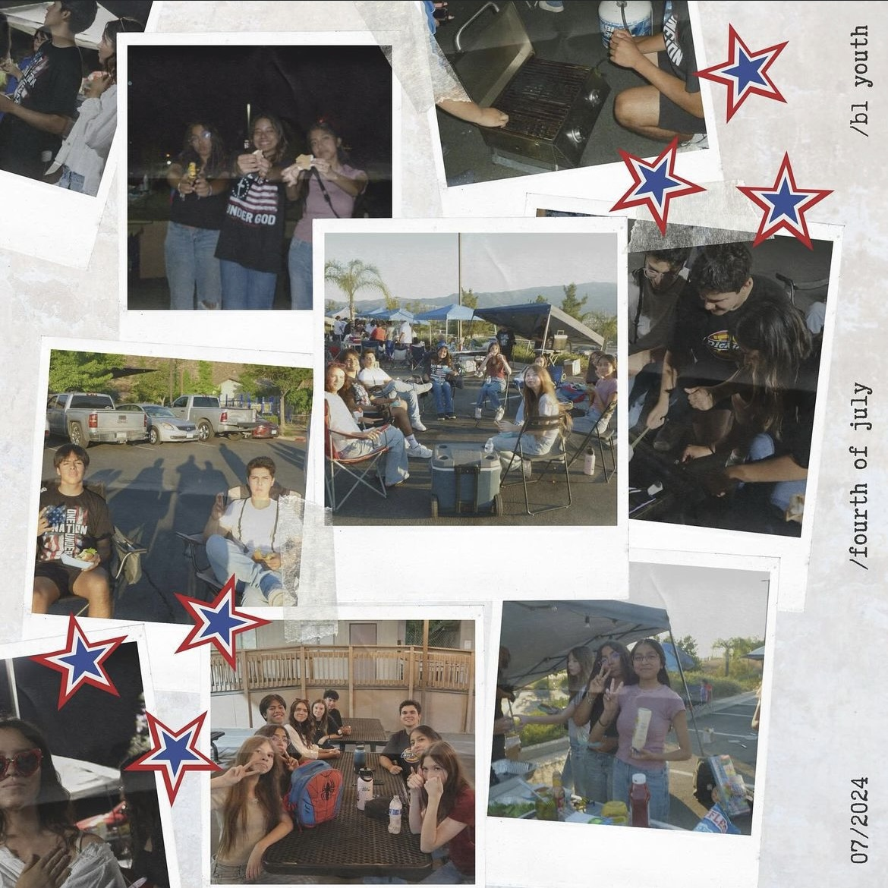
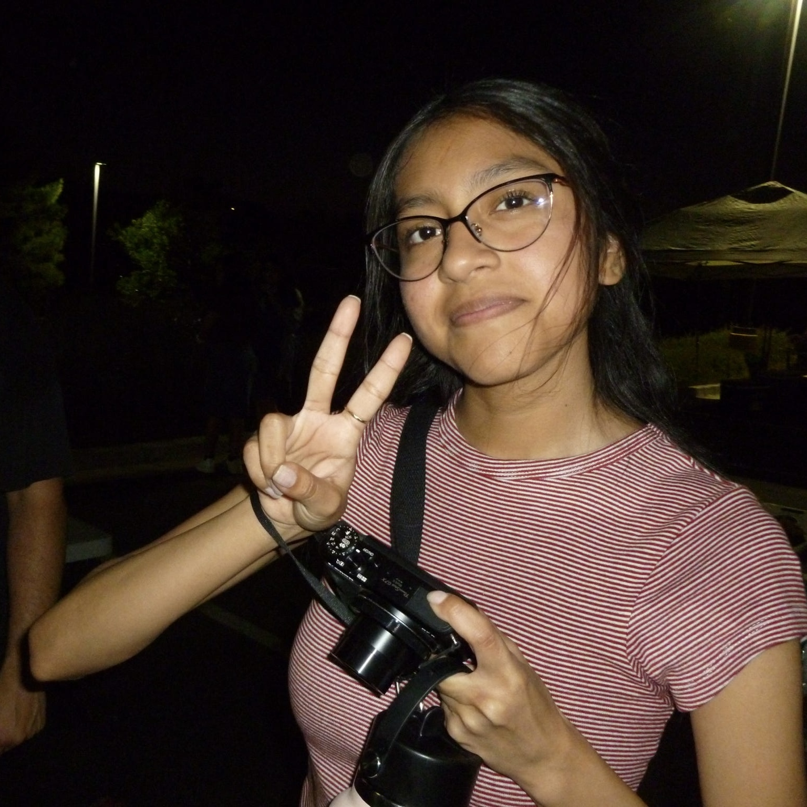
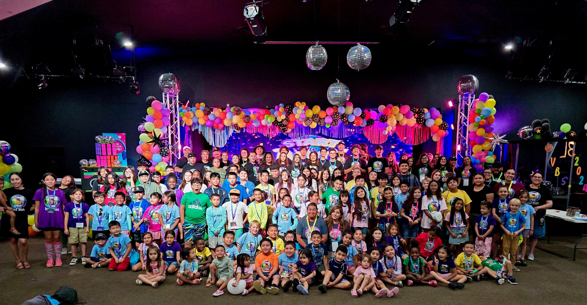
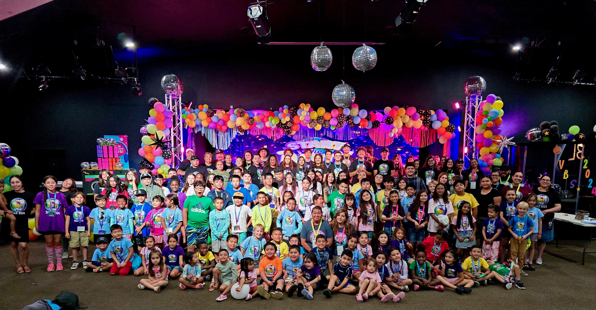
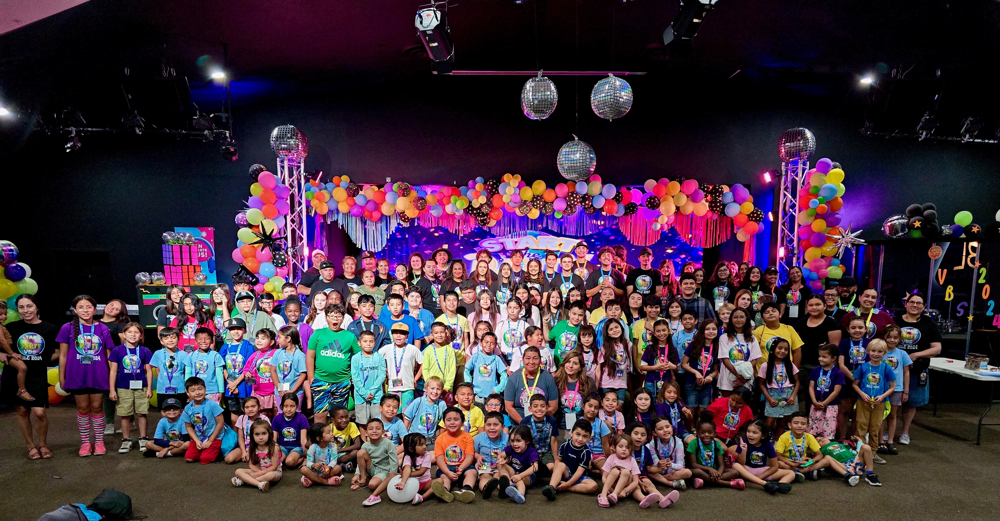

Arianna Franco-Gomez
First-year education major at the University of California, Riverside, and future elementary school teacher. I enjoy working behind the scenes, especially with my church community. My dream since I was a kid was to become a teacher. I am grateful that I have the opportunity to begin my journey to accomplish my dream at UCR.
I am a Sunday school teacher for the toddler group, and I am a crew leader for the Vacation Bible School that occurs every Summer. These roles have given me hands-on experience with working with children. They have taught me a lot of patience, since children are very curious and like to do things their own way, and do not always know when their behavior is acceptable or not. It is a lot of responsibility to be in charge of a group of kids and have to teach them something, especially something about the Bible. It was a challenge to make the learning environment fun and engaging, but it was possible. I have been the social media manager for my youth group for seven months. It was an opportunity that did not present itself, but that I instead sought out. As I shared, I like working behind the scenes and this is a great job for that. I am responsible for promoting our events and events from our community of churches, and making sure that everyone receives the information they need. I also communicate with plenty of people in my church community like parents, youth, volunteers, and even leads from other churches. I love the creative aspect of my ministry, getting to come up with fun ideas to promote our events and show the outcome of said events. I honor Jesus through my work, because he is the center of it all. That patience and love towards the children of my church comes from Jesus, and His unfailing love for his creation.
I am interested in the major of Education, Society, and Human Development because I love working with children and making an impact in their lives. Even though I want to become a teacher, I am interested in changing the education system itself to be more just, to be able to assist each student while still focusing on teaching math, english, history, and science. At a research institution like the University of California, Riverside, we can dive deeper into understanding how the system works and how we can work towards bringing change. I want to be able to understand kids to be able to give them the best education they can get, despite their backgrounds
Experience
Social Media Manager
• Runs youth Instagram for church
• Communicates with youth groups from other churches in our community
• Creates event flyers and content ideas
Sunday School Teacher
• Responsible for group of toddlers from ages 1-4
• Comes up with activities and small lessons
VBS Crew Leader
• Responsible for group of 20 kids ages 10-12
• Handled disputes among kids
• Created fun and engaging environment
• Moved children through each station rotation safely
Education
UC Riverside
Portfolio


 

